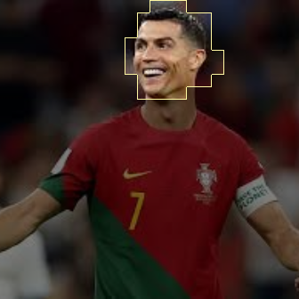
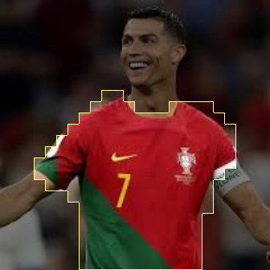
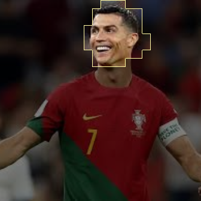
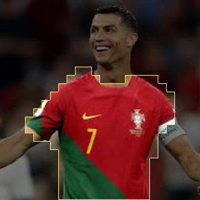
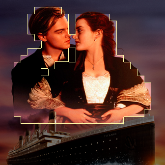
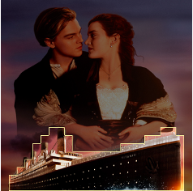

Abstract
This study targets a critical aspect of multi-modal LLMs' (LLMs&VLMs) inference: explicit controllable text generation. Multi-modal LLMs empower multi-modality understanding with the capability of semantic generation yet bring less explainability and heavier reliance on prompt contents due to their autoregressive generative nature. While manipulating prompt formats could improve outputs, designing specific and precise prompts per task can be challenging and ineffective. To tackle this issue, we introduce a novel inference method, Prompt Highlighter, which enables users to highlight specific prompt spans to interactively control the focus during generation. Motivated by the classifier-free diffusion guidance, we form regular and unconditional context pairs based on highlighted tokens, demonstrating that the autoregressive generation in models can be guided in a classifier-free way. Notably, we find that, during inference, guiding the models with highlighted tokens through the attention weights leads to more desired outputs. Our approach is compatible with current LLMs and VLMs, achieving impressive customized generation results without training. Experiments confirm its effectiveness in focusing on input contexts and generating reliable content. Without tuning on LLaVA-v1.5, our method secured 69.5 in the MMBench test and 1552.5 in MME-perception.
Application 1: Partial Context Highlighter
Click image to get customized text generation results. Ronaldo, a smiling soccer player, is the main focus of the image. He is wearing a red and green jersey and is happily posing for the camera. The smile on his face is contagious, and he appears to be enjoying the moment.
In the background, there are several other people present, but they are not the main focus of the image. The primary focus remains on the happy soccer player, who is the center of attention in this scene." />
a soccer player wearing a red, green, and yellow jersey with the number seven on it. The player is smiling and appears to be enjoying the game. He is wearing green and red stripes on his jersey, which are a part of his uniform. The player is standing on a field, possibly during a match or practice session.
In the background, there are several other people present, possibly teammates or opponents, but they are not the main focus of the image. The main focus is on the soccer player in the red, green, and yellow uniform.
" />
Ronaldo, a smiling soccer player, is the main focus of the image. He is wearing a red and green jersey and is happily posing for the camera. The smile on his face is contagious, and he appears to be enjoying the moment.
In the background, there are several other people present, but they are not the main focus of the image. The primary focus remains on the happy soccer player, who is the center of attention in this scene." />
a soccer player wearing a red, green, and yellow jersey with the number seven on it. The player is smiling and appears to be enjoying the game. He is wearing green and red stripes on his jersey, which are a part of his uniform. The player is standing on a field, possibly during a match or practice session.
In the background, there are several other people present, possibly teammates or opponents, but they are not the main focus of the image. The main focus is on the soccer player in the red, green, and yellow uniform.
" />
User: Describe this image.
Man: "I can't believe we're on this grand ship, sailing across the vast ocean. It's like we're in a fairy tale."
Woman: "It's truly magical. I feel so close to you right now, like nothing else matters in the world."
Man: "I feel the same way. I'm so grateful to have you by my side on this journey. I promise to always cherish and protect you."
Woman: "I know you will. I love you more than words can express."
As they continue to embrace, the couple is filled with a sense of contentment and happiness, knowing that they have found a love that transcends time and space." /> the couple, Jack and Rose, stand on the deck of the Titanic, holding each other close. Jack looks into Rose's eyes and says,
" Rose, I promise you that I will always be here for you, no matter what happens. We'll face any challenges together, and our love will be the strongest force that keeps us going."
Rose smiles and replies,
" Jack, I believe in us. We've been through so much already, and I know that we can overcome anything that comes our way. I love you, and I'm grateful to have you by my side."
"/> As the Titanic ship sails across the ocean, a couple stands on the deck, gazing into each other's eyes. The man says,
" I'm so glad we're on this journey together. I promise to always protect and cherish you, no matter what challenges we may face."
The woman responds,
" I feel the same way. I trust you with my life, and I know that we'll face whatever comes our way as a team."
As they embrace, the sun sets behind them, casting a warm glow on the scene, symbolizing the strength and love that binds them together. " />
User: Write a dialog based on this image.
Extensions
Free-form image-conditioned generation
In addition to its ability to generate images corresponding to the exemplar image and text prompts, we have also discovered that RIVAL has a strong ability to transfer styles and semantic concepts in the exemplar for a casual text-driven image generation. With RIVAL, we can easily get a style-specific text-to-image generation. For instance, it can produce a portrait painting of a robot adorned in a sailor uniform while faithfully preserving the stylistic characteristics inherent in the provided oil painting.

More examples (with the same prompt input and exemplar in the above image)


Example-based inpainting
When abstracting RIVAL as a novel paradigm of image-based diffusion inference, we can extend this framework to enable it to encompass other image editing tasks, such as inpainting. By incorporating a coarse mask M into the generation chain, we obtain the inpainted image G.

Integration with concept customization
In addition to its ability to generate image variations from a single source image using a text prompt input for semantic alignment, RIVAL can be effectively combined with optimization-based concept customization techniques, such as DreamBooth, to enable novel concept customization.

Compare with UnCLIP
Comparision and adaptation with UnCLIP methods. We highlight texts that enhance the image understanding for each case. Our inference pipeline is adapted to the image variation model depicted in the fourth column, in contrast to the variation achieved through vanilla inference in the bottom left corner of each image.


Methods

To address this distribution gap problem for generating image variations, we propose an inference pipeline called Real-world Image Variation by Alignment (RIVAL). RIVAL is a tunning-free approach that reduces the domain gap between the generated and real-world images by aligning the denoising chain with the real-image inversion chain. Our method comprises two key components: (i) a cross-image self-attention injection that enables cross-image feature interaction in the variation denoising chain, guided by the hidden states from the inversion chain, and (ii) a step-wise latent normalization that aligns the latent distribution with the inverted latent in early denoising steps. Notably, this modified inference process requires no training and is suitable for arbitrary image input.
BibTeX
@article{zhang2023realworld,
title={Real-World Image Variation by Aligning Diffusion Inversion Chain},
author={Yuechen Zhang and Jinbo Xing and Eric Lo and Jiaya Jia},
journal={arXiv preprint arXiv:2305.18729},
year={2023},
}